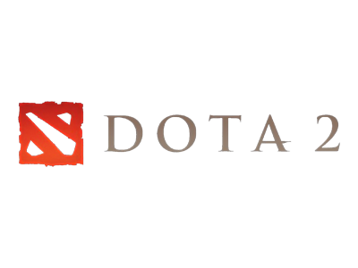

<!DOCTYPE html><html><head><meta charset="utf-8"><meta name="viewport" content="width=device-width, initial-scale=1, maximum-scale=1"><title>Presentasi | Penjelasan DotA Secara Umum</title><link rel="stylesheet" type="text/css" href="bower_components/prism/themes/prism.css"><link rel="stylesheet" type="text/css" href="bower_components/todc-bootstrap-main/dist/css/bootstrap.min.css"><link rel="stylesheet" type="text/css" href="styles/main-presentation.css"></head><body></body></html><nav role="navigation" class="navbar navbar-inverse"><div class="container"><div class="navbar-header"><button type="button" data-toggle="collapse" data-target="presentation-chooser" class="navbar-toggle"><span class="sr-only"></span><span class="icon-bar"></span><span class="icon-bar"></span><span class="icon-bar"></span></button><a href="index.html" class="navbar-brand">Presentasi</a></div><div id="presentation-chooser" class="collapse navbar-collapse"><ul class="nav navbar-nav"><li class="dropdown"><a data-toggle="dropdown" href="#" class="dropdown-toggle">Pilih Subtopik <b class="caret"></b></a><ul class="dropdown-menu"><li><a href="1Penjelasan.html">Penjelasan DotA 2 Secara Umum</a></li><li><a href="2Role.html">Role</a></li><li><a href="3Warding.html">Warding</a></li><li><a href="4Sniper.html">Hero Guide : Sniper</a></li></ul></li></ul></div></div></nav><article id="presentation"><section><h1 style="margin-bottom:-7%;" class="bullet">Topik kita hari ini?</h1><ul><li class="big"></li></ul></section><section><h1 class="bullet"></h1><ul><li style="font-weight:100;font-size:24px;">sebuah permainan <em>(sekarang disebut e-sport)</em> menggunakan strategi dimana kita mengendalikan sebuah hero dan harus saling bekerja sama dengan pemain lain yang ada dalam satu tim untuk dapat menang dalam war dengan tujuan akhir</li><li style="font-size:72px;">Menghancurkan Markas Musuh</li></ul></section><section><p>DotA itu seperti sepak bola, seperti basket, ataupun olah raga lainnya, map nya selalu sama, gaya permainnanya pun sama. Akan tetapi disetiap permainan kita mencari sebuah momentum, memainkan permainan indah layaknya sepak bola.</p></section><section><ul><li>DotA satu-satunya game online yang mampu membuat turnamen dunia yang hadiahnya pun mengejutkan atlet-atlet olahraga.</li><li>Terakhir di tahun 2014, DotA memberikan reward untuk tim NewBee. Merekalah yang menjadi tim DotA nomer 1 di dunia dan memenangkan $11 Million Dollars, angka yang sangat menakjubkan untuk sebuah game online.</li><li></li></ul></section><section><h1 class="bullet">Jadi...</h1><ul><li>apakah sekarang anda tertarik untuk mempelajarinya?</li></ul></section><section><h1>Let's Check it out!</h1></section><section><h1 class="bullet">Fundamental dalam Dota 2</h1><h2 style="color:white;" class="bullet">Game mode</h2><h2 style="color:white;" class="bullet">Aktor</h2><h2 style="color:white;" class="bullet">Item</h2></section><section><h1 class="bullet">Game Mode </h1><h2 style="color:white;">- All Pick -</h2><ul><li>All Heroes are available to all players.  All players have 1 minute to pick their heroes.  A player can also choose to "random" a hero, which will (you guessed it) choose a random Hero for the player, as well as give the player a bonus 250 starting gold.  This is the mode used in the current matchmaking system.</li></ul></section><section><h1 class="bullet">Game Mode</h1><h2 style="color:white;">- Captain's Mode - </h2><ul><li>Two players, one from each team (blue for radiant, pink for dire), take turns banning and picking Heroes for their team.  Banning a hero removes it from the pool, making it unavailable to pick for either team. This is the usual mode for organized and competitive games.   </li></ul></section><section><h1 class="bullet">Game Mode</h1><h2 style="color:white;">- All Random - </h2><ul><li>Players are automatically assigned a random hero. A player can repick once to get a new random hero.</li></ul></section><section><h1 class="bullet">Game Mode</h1><h2 style="color:white;">- Mid Only - </h2><ul><li>Players can pick any hero, even the same as other players.  Creeps only spawn in the middle lane. This mode is great for 1v1 matchups and game modes such as Pudge Wars.</li></ul></section><section><h1 class="bullet">Actor</h1><ul style="color:white;"><li>Heroes</li><li>Creeps</li><li>Buildings</li></ul></section><section><h1>Actor</h1><h2 style="color:white;" class="bullet">- Heroes -</h2><ul><li>Heroes are the essential element of Dota 2, as the course of the game is dependent on their intervention. Players are split into two teams of 5, and can select a Hero from a selection panel. Heroes all have different play styles that stem from unique abilities and combinations of attributes. Over the course of the game, Heroes will accumulate experience. Once a Hero has enough experience, they will level up, making them more powerful than before and allowing them to level up new abilities.</li></ul></section><section><h1>Actor</h1><h2 style="color:white;" class="bullet">- Creeps -</h2><ul><li>Creeps are a type of unit within Dota 2 that heroes can interact with, but do not have direct control over by default (see Chen, Enchantress and Helm of the Dominator). There are two types of creeps: lane creeps and neutral creeps. Both types of creeps can be killed by players for gold and experience. Allied creeps at low health can be denied to reduce the bounty given to enemies.</li></ul></section><section><h1>Actor</h1><h2 style="color:white;" class="bullet">- Buildings -</h2><ul><li>Buildings are special units that are immune to most spells, use Fortified Armor, and are immobile. Destroying a building rewards you with a bounty, similar to most Creeps or Heroes. Destroying towers rewards the entire team.</li></ul></section></article><script src="bower_components/bespoke.js/dist/bespoke.min.js"></script><script src="bower_components/bespoke-bullets/dist/bespoke-bullets.min.js"></script><script src="bower_components/bespoke-scale/dist/bespoke-scale.min.js"></script><script src="bower_components/bespoke-hash/dist/bespoke-hash.min.js"></script><script src="bower_components/bespoke-progress/dist/bespoke-progress.min.js"></script><script src="bower_components/bespoke-state/dist/bespoke-state.min.js"></script><script src="bower_components/prism/prism.js"></script><script src="bower_components/prism/components/prism-bash.min.js"></script><script src="scripts/main.js"></script><script src="bower_components/jquery/jquery.min.js"></script><script src="bower_components/todc-bootstrap-main/dist/js/bootstrap.min.js"></script>